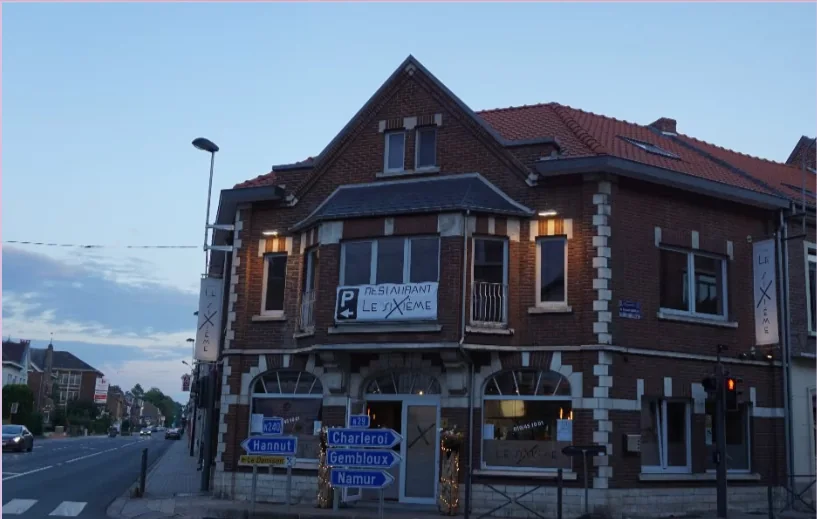

Contact
Naar Le Sixième
Een vraag, een reservering, een allergie om te melden: bellen is het eenvoudigst.
- Adres
- Avenue Fernand Charlot 2
1370 Jodoigne, Belgique
Route - Reservering
- 010 45 10 01
- info.lesixieme@gmail.com
- Bereikbaarheid
- Parkeren mogelijk tegenover het restaurant. Airconditioning in de zaal.
Openingsuren
| maandag | 12:00 – 13:30 · 18:30 – 21:30 |
|---|---|
| dinsdag | Gesloten |
| woensdag | Gesloten |
| donderdag | 12:00 – 13:30 · 18:30 – 21:30 |
| vrijdag | 12:00 – 13:30 · 18:30 – 21:30 |
| zaterdag | 18:30 – 21:30 |
| zondag | 12:00 – 13:30 · 18:30 – 21:30 |
Gesloten op dinsdag, woensdag en zaterdagmiddag.
Reserveren
Kaart